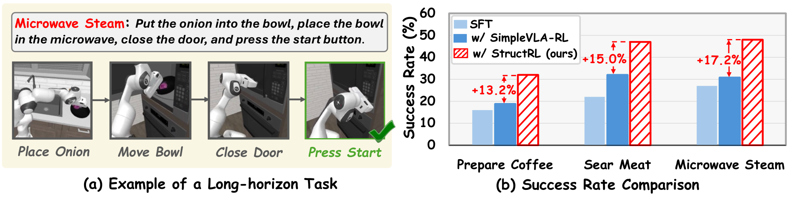
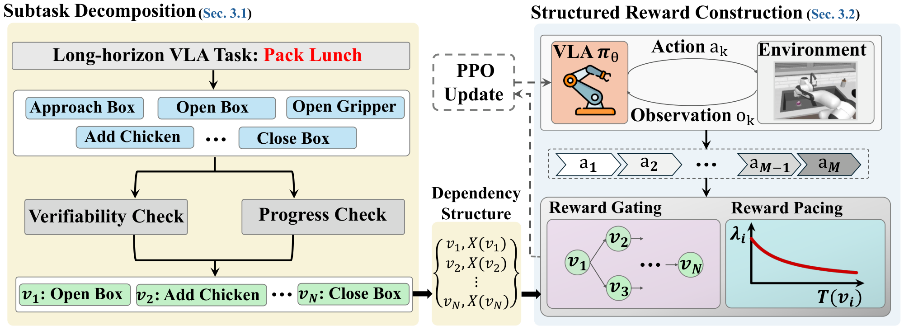
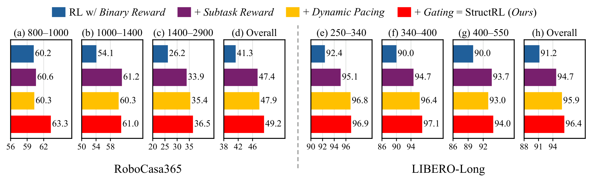

StructRL: Online Structured Reinforcement Learning for Long-Horizon Vision-Language-Action Tasks
TL;DR: StructRL rewards verifiable subtask progress, gated by the task's prerequisite structure and paced by demonstration timing, for online RL of long-horizon VLA policies.

Abstract
Vision-language-action (VLA) models perform well on shorter-horizon manipulation tasks but still struggle with long-horizon tasks that require multiple dependent manipulations from a single command. Online reinforcement learning (RL) can improve these policies through environment interaction, yet many existing methods provide reward only after the complete task succeeds. However, such terminal supervision is sparse and does not distinguish early failures from rollouts that make substantial partial progress. We propose StructRL, an online RL framework that constructs structured intermediate supervision from verifiable subtask completions. StructRL decomposes each task into verifiable subtasks, grants intermediate rewards only after the prerequisite subtasks have been completed, and scales each reward according to completion pace. Across RoboCasa365 and LIBERO-Long with GR00T-N1.5 and π0.5, StructRL consistently outperforms evaluated online RL baselines. These results show that verifiable, structured intermediate rewards improve long-horizon VLA post-training.
Rollouts
Each video shows GR00T-N1.5 after SFT (top) and after online RL with StructRL (bottom), starting from the same RoboCasa365 scene. The demos use the decomposition with about five subtasks per task (N̄ = 5), the best setting of the density study in the paper (Fig. 4). The panel scores both rollouts with that StructRL reward, computed after the fact from the simulator's subtask checks (GR00T-N1.5 itself is trained by imitation, without any reward): a subtask pays once it is completed after its prerequisites, sooner completions pay more, and completing the task adds 2.0.
Method

- Subtask decomposition. An LLM decomposes each task command into subtasks with verifiable completion criteria and a prerequisite structure.
- Structure-aware reward gating. A detected completion is eligible for intermediate reward only after all of its prerequisites have been completed, and each subtask is rewarded at most once.
- Dynamic reward pacing. Each eligible completion pays β / (1 + T / Td), where T is the time since the previous rewarded completion and Td is a reference duration from the SFT demonstrations; the first full-task success adds λc.
Results
Success rate (%). RoboCasa365: 16 Composite-Seen tasks, 100 episodes each. LIBERO-Long: 10 tasks, 50 episodes each.
| Backbone | Method | RoboCasa365 | LIBERO-Long |
|---|---|---|---|
| GR00T-N1.5 | SFT | 38.6 | 90.6 |
| Sparse-RL (PPO) | 40.2 | 91.2 | |
| SimpleVLA-RL (GRPO) | 41.5 | 92.4 | |
| StructRL (PPO) | 49.1 | 96.6 | |
| π0.5 | SFT | 39.3 | 90.6 |
| Sparse-RL (PPO) | 41.1 | 92.6 | |
| SimpleVLA-RL (GRPO) | 41.9 | 94.0 | |
| StructRL (PPO) | 45.8 | 96.2 |

BibTeX
@article{yin2026structrl,
title = {StructRL: Online Structured Reinforcement Learning for Long-Horizon Vision-Language-Action Tasks},
author = {Yin, Ziyi and Woo, Sangmin and Zhou, Kang and Kim, Sungyeon and Feng, Aosong and Ding, Haibo and Huan, Luke},
journal = {arXiv preprint arXiv:2609.36352},
year = {2026}
}